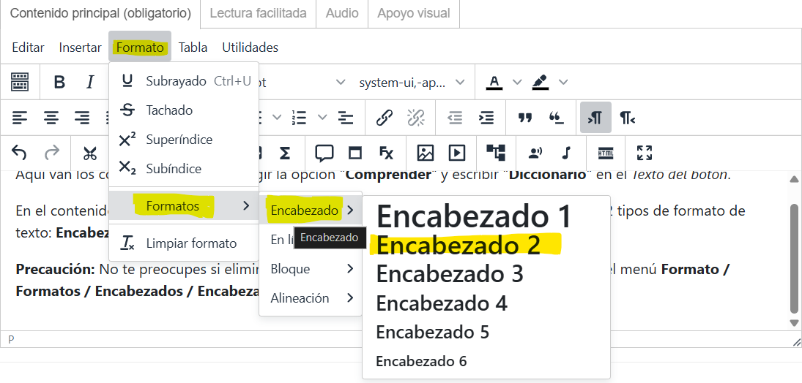
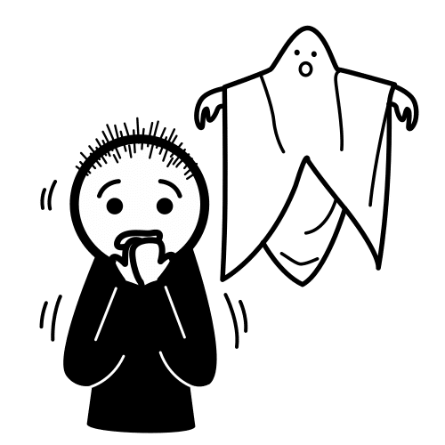
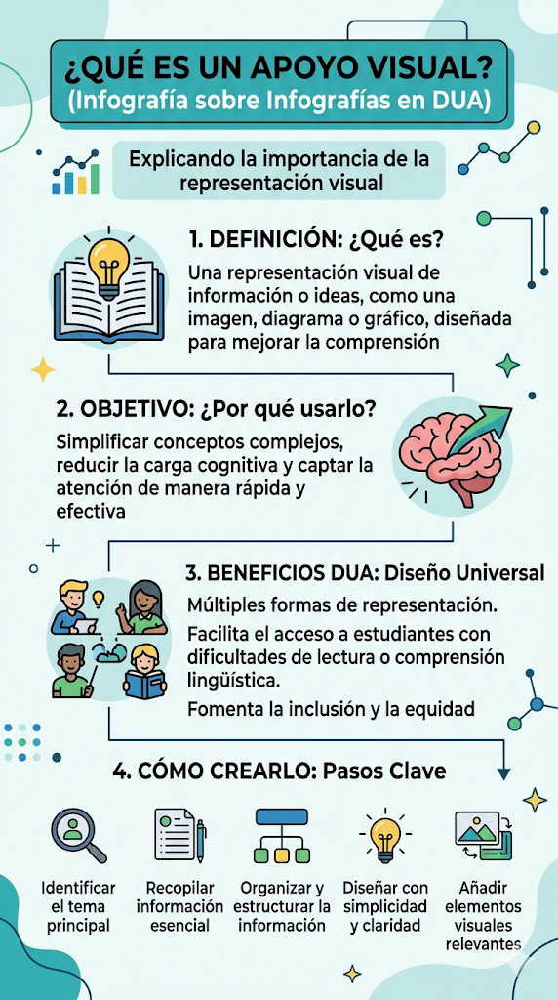

<br>
Diccionario
Aquí van los conceptos. Recuerda elegir la opción "Comprender" y escribir "Diccionario" en el Texto del botón.
En el contenido, utiliza el botón FX para agregar un efecto acordeón. Este efecto consta de 2 tipos de formato de texto: Encabezado 2 (donde va el término) y Párrafo (la definición del término).
Precaución: No te preocupes si eliminas el formato del término. Escribe el texto y pulsa en el menú Formato / Formatos / Encabezados / Encabezado 2. ¡Listo!

2.1. El Miedo nos hace cautos
Busca en Internet o utiliza una IA para completar este DUA.
Añade alguna imagen representativa.
Lectura facilitada
Puedes agregar una Lectura Facilitada creando una tabla de dos columnas: la primera para las imágenes (ARASAAC) y la segunda para el texto de LF. Por ejemplo:
|
 |
Texto facilitador sobre el miedo |
Audio
Puedes agregar un audio subiendo el archivo multimedia mediante el icono [▶︎] de la barra de herramientas.
También puedes utilizar un enlace a alguna página con sonidos libres de derechos o un generador de audios mediante IA.
Apoyo visual
